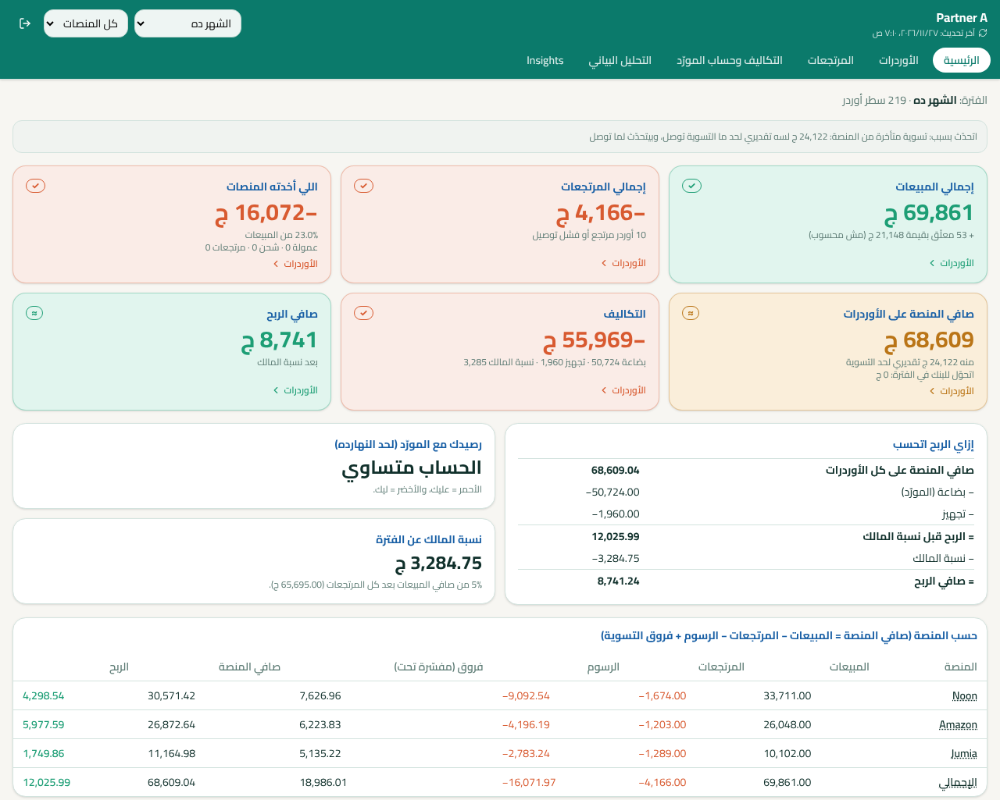
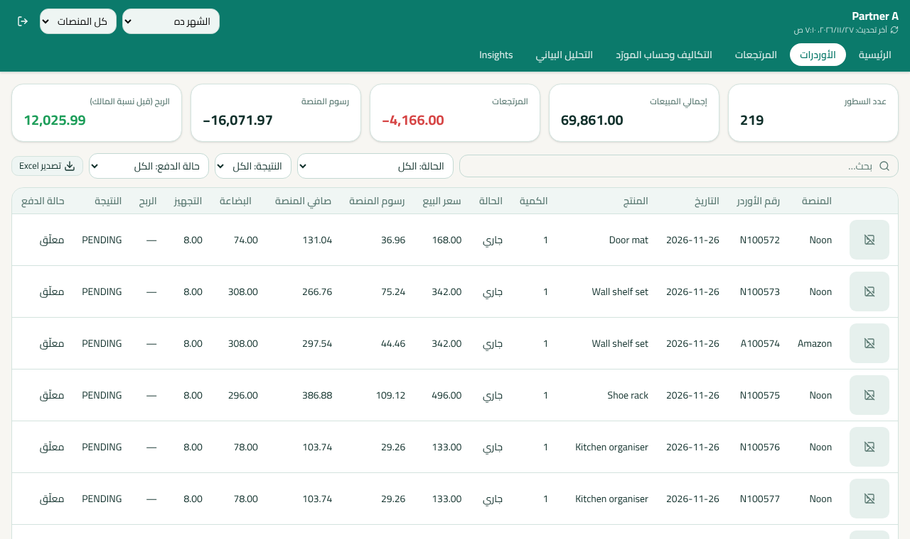
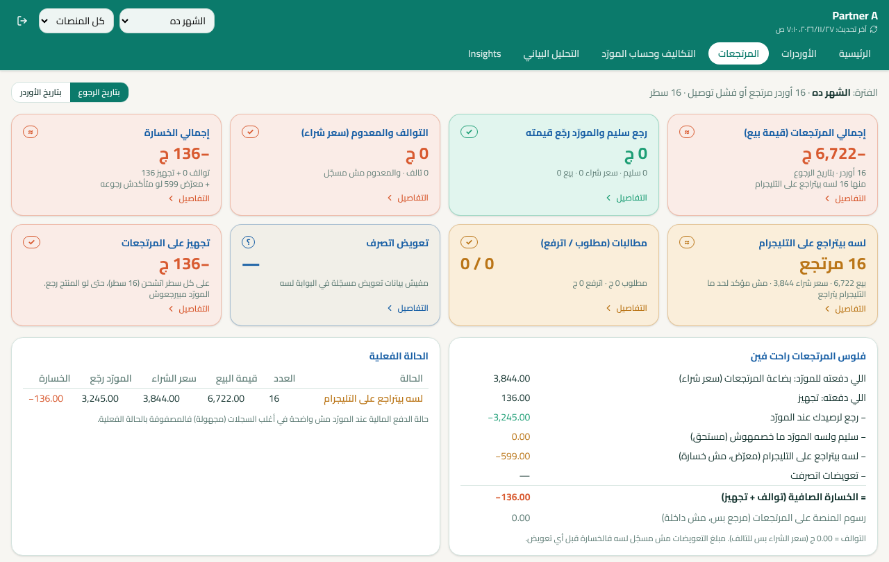
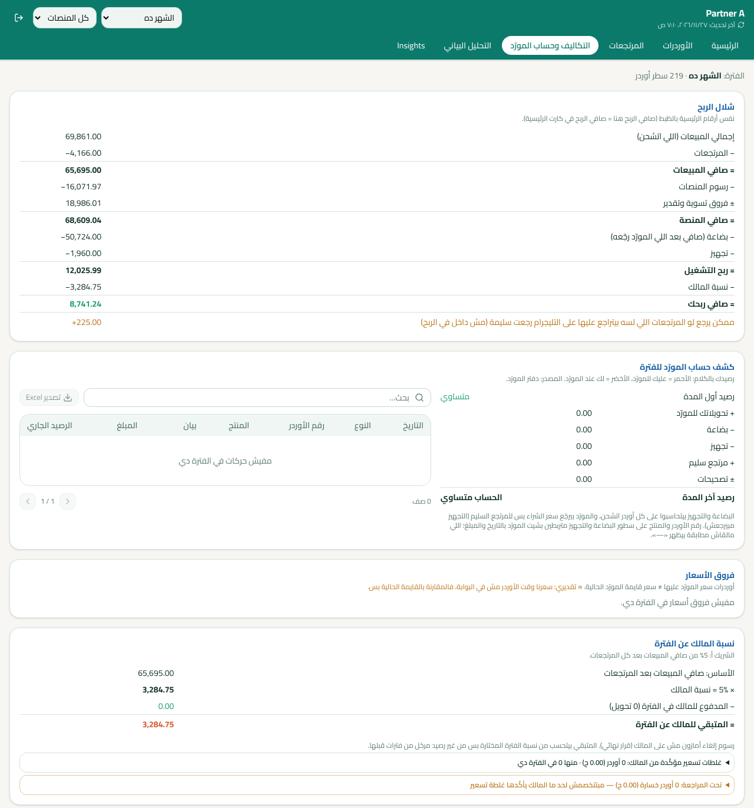

A partner reporting portal where the database, not the screen, decides who sees what
Marketplace partners used to get a daily email, a weekly PDF and a Google Sheet. I built a web portal on top of the same numbers, so each partner logs in and sees only their own account: orders, returns, claims, payouts, statements and what they are owed.
Role: sole designer and builder (requirements, data design, security model, sync job, interface). Stack: PostgreSQL, Supabase (Auth + row-level security), Python sync job, React, TypeScript, Vite, Tailwind, Vercel.
The problem
Three channels (email, PDF, spreadsheet) meant three places for the same number to drift. Partners asked the same questions repeatedly (what was returned, what is still pending, what do you owe me), and every answer needed me. I wanted one place that answers those questions the same way every time, without exposing one partner's data to another.
Architecture
The interface




Decisions I would defend in an interview
Isolation lives in the database
Each partner is limited to their own account by row-level security, and the views run with the caller's rights. The anonymous role has no permissions at all. Hiding things in the interface would not be enough, so I did not rely on it.
Publish less
The portal gets copies of seven report tables plus a health table for admins. Raw imports, finance ledgers and credentials never leave the local warehouse.
Never replace good data with bad data
The daily sync loads into a staging area, compares totals with the source to the cent, and only then swaps in a single transaction. If the check fails, partners keep seeing the last good copy, the run is marked failed, and the morning email names the failing stage.
One definition per number
Portal figures reuse the same measure definitions as the Power BI report, so a balance is the same number in every place. In the earlier redesign work I found five different figures for one balance and reduced them to one.
Access is a controlled process
Self sign-up is closed. A script creates users, refuses any real address without a named approval, and can disable or remove a user in one command. An admin account has two-factor sign-in. Disabling a partner account removes their data at the next sync.
Test the promise, not just the code
An automated test signs in as different users and checks that none can read another account's rows. It runs on every deploy and must report zero failures.
What partners can do
| Question | Where it is answered |
|---|---|
| What did I sell, keep and lose this period? | Summary and profit pages with a date-range picker |
| Which returns came back and in what condition? | Returns pages with drill-down and CSV export |
| What is still pending on the platform? | Pending money by age |
| What am I owed, and what was paid? | Statement, payouts and transfers |
| What needs my attention? | Claims and inbox |
Reliability and operations
- A health command reports whether the last sync is stale, failed, or the project is unreachable, and exits with a different code for each case.
- Daily writes keep the free-tier database from pausing after a quiet week.
- Security headers (content security policy, HSTS) are set in the hosting config.
- A runbook documents first-time setup, adding a partner, stopping an account and emergency shutdown.
What I would improve next
Enforce two-factor sign-in inside the database policies, not only in the interface, and connect the daily sync to the scheduler so it no longer depends on a manual run.